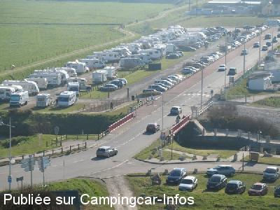

ASN = Aire de services avec stationnement nuit possible de :
VEULETTES SUR MER
(N° 380)
Accès/adresse :
Rue du Pont Rouge
76450 VEULETTES SUR MER
76450 VEULETTES SUR MER
Latitude : (Nord) 49.85412° Décimaux ou 49° 51′ 14′′
Longitude : (Est) 0.60469° Décimaux ou 0° 36′ 16′′
Tarif : 2016
Stationnement : 6 €
Eau ou 1h d'électricité : 3,50 € / jeton
Taxe de séjour : 0,50 €
Jetons à l'Office de Tourisme
Au Camping Municipal
A l'épicerie Vival
Passage d'un employé communal
Type de borne : EURO-RELAIS
Services :


Autres informations :
Tel +33 (0)235 975 344
http://www.ville-veulettes-sur-mer.fr/index.asp
Le 10/09/2013 par flotdelarance
Le 27/11/2011 par michele.be
Le 12/05/2011 par olive mimi

Le 28/01/2009 par starski.45
Le 28/02/2004 par nomade 59
Le 28/02/2004 par nomade 59
de
fred25310
le 14/04/2016 :
NPA Fab maj
attention maintenant 6€ + taxe de séjour de 0,5€ par adulte
NPA Fab maj
attention maintenant 6€ + taxe de séjour de 0,5€ par adulte
de
Fred Martin
le 10/02/2016 :
En travaux en février 2016 et inaccessible. Malgré une excellente situation, la vue sur mer est gâchée par d'affreux chalets blancs qui défigurent la plage.
La sortie est impossible à franchir pour un cc de taille normale. Obligation de sortir donc par l'entrée (si encore envisageable après les travaux).
En travaux en février 2016 et inaccessible. Malgré une excellente situation, la vue sur mer est gâchée par d'affreux chalets blancs qui défigurent la plage.
La sortie est impossible à franchir pour un cc de taille normale. Obligation de sortir donc par l'entrée (si encore envisageable après les travaux).
de
Pégase
le 07/10/2015 :
§ De passage à Veulette les 6 et 7 octobre. Le tarif des 2 aires communale est de 6 €, toujours collecté par l'employé municipal. Endroit magnifique.
§ De passage à Veulette les 6 et 7 octobre. Le tarif des 2 aires communale est de 6 €, toujours collecté par l'employé municipal. Endroit magnifique.
de
aubin
le 07/09/2015 :
bjr de passage le dernier week end de aout super aire tres proche de la mer et tres beau village
bjr de passage le dernier week end de aout super aire tres proche de la mer et tres beau village
de
MABER333
le 22/10/2014 :
De passage mi septembre 2014. Nous recommandons.Spacieux, calme, jolie bourgade. Couchers de soleil superbes (photos impératives...)Toutes commodités.
De passage mi septembre 2014. Nous recommandons.Spacieux, calme, jolie bourgade. Couchers de soleil superbes (photos impératives...)Toutes commodités.
de
flotdelarance
le 10/09/2013 :
sommes allés en sept 2013. Aire très bien, bien placée et commune très jolie et propre
sommes allés en sept 2013. Aire très bien, bien placée et commune très jolie et propre
de
bruno M
le 22/08/2013 :
Aire toujours très agréable, bien que très fréquentée au mois d'août.
Aire toujours très agréable, bien que très fréquentée au mois d'août.
de
helene giuliano
le 04/11/2012 :
venons de passer une nuit très bien sur cette aire , calme et surtout nous conseillons aux camping-cars d'aller manger au restaurant LES FREGATES pas loin du casino, cuisine raffiné et desserts fait maison.
venons de passer une nuit très bien sur cette aire , calme et surtout nous conseillons aux camping-cars d'aller manger au restaurant LES FREGATES pas loin du casino, cuisine raffiné et desserts fait maison.
de
nathkim
le 04/11/2012 :
De passage ce vendredi 2/11 nous avons trouvé cette plage très jolie et l'aire cc très bien. Un paneau d'affichage indiquait que l'on pouvait stationner sur le parking de la plage ou celui en macadam du chemin des coursses. Nous avons choisi ce dernier étant donner le temps pluvieux et le meilleur éclairage. Nous étions d'accord de payer les 4,50€ mais comment et à qui? Arriver à 19h et repartis à 9h nous n'avons vu perssonne et l'office du tourisme était fermé comme le bar-tabac!
De passage ce vendredi 2/11 nous avons trouvé cette plage très jolie et l'aire cc très bien. Un paneau d'affichage indiquait que l'on pouvait stationner sur le parking de la plage ou celui en macadam du chemin des coursses. Nous avons choisi ce dernier étant donner le temps pluvieux et le meilleur éclairage. Nous étions d'accord de payer les 4,50€ mais comment et à qui? Arriver à 19h et repartis à 9h nous n'avons vu perssonne et l'office du tourisme était fermé comme le bar-tabac!
de
Ptitlou59
le 17/07/2011 :
Nous avons passé 2 nuits les 9 et 15 juillet 2011, aire très calme et bel endroit à contempler. Contrairement à Noël28, je trouve que 4,50€ la nuit ce n'est pas cher, d'autant plus que nous avons les toilettes publics gratuits à l'entrée de cette aire. Merci à Veulettes/mer, nous y reviendrons.
Nous avons passé 2 nuits les 9 et 15 juillet 2011, aire très calme et bel endroit à contempler. Contrairement à Noël28, je trouve que 4,50€ la nuit ce n'est pas cher, d'autant plus que nous avons les toilettes publics gratuits à l'entrée de cette aire. Merci à Veulettes/mer, nous y reviendrons.
de
noel28
le 06/07/2011 :
§
nous sommes passés sur cette aire le week end du 1er juillet 2011. Aire calme, un peu juste pour se garer si vous avez un grand camping car, plage à 100 m, jeux d'enfants, stationnement un peu cher 4euros 50 par nuit sans eau et électricité. Une base de loisirs avec baignade à 8 km de veulette sur mer à cany barville. Sympa l'endroit.
§
nous sommes passés sur cette aire le week end du 1er juillet 2011. Aire calme, un peu juste pour se garer si vous avez un grand camping car, plage à 100 m, jeux d'enfants, stationnement un peu cher 4euros 50 par nuit sans eau et électricité. Une base de loisirs avec baignade à 8 km de veulette sur mer à cany barville. Sympa l'endroit.
de
JPR
le 18/06/2011 :
Que dire sinon ce qui a été dit...village agréable et aire sympa. Avec en prime la possibilité d' acheter du poisson et des crustacés d' une grande fraîcheur sur la promenade le long de la plage en allant vers le village.La propriétaire des lieux est de plus très sympa.Quand c' est bien il faut aussi le dire.
Que dire sinon ce qui a été dit...village agréable et aire sympa. Avec en prime la possibilité d' acheter du poisson et des crustacés d' une grande fraîcheur sur la promenade le long de la plage en allant vers le village.La propriétaire des lieux est de plus très sympa.Quand c' est bien il faut aussi le dire.
de
olive mimi
le 12/05/2011 :
§
veulette aire très bien,petit village sympa et de bonne promenade a faire. a coté de la mer,et il y a de bon restaurent pour les fruits de mer. la nuit et a 5E .
§
veulette aire très bien,petit village sympa et de bonne promenade a faire. a coté de la mer,et il y a de bon restaurent pour les fruits de mer. la nuit et a 5E .
de
le Glaude
le 26/09/2010 :
Aire plutôt sympa au bord de la mer (plage de galets). Nous y avons passé une journée à nous promener et à jouer au cerf-volant avec les enfants. La brasserie près du casino vous sert d'excellents plats à prix raisonnables. Merci à la commune !
Aire plutôt sympa au bord de la mer (plage de galets). Nous y avons passé une journée à nous promener et à jouer au cerf-volant avec les enfants. La brasserie près du casino vous sert d'excellents plats à prix raisonnables. Merci à la commune !